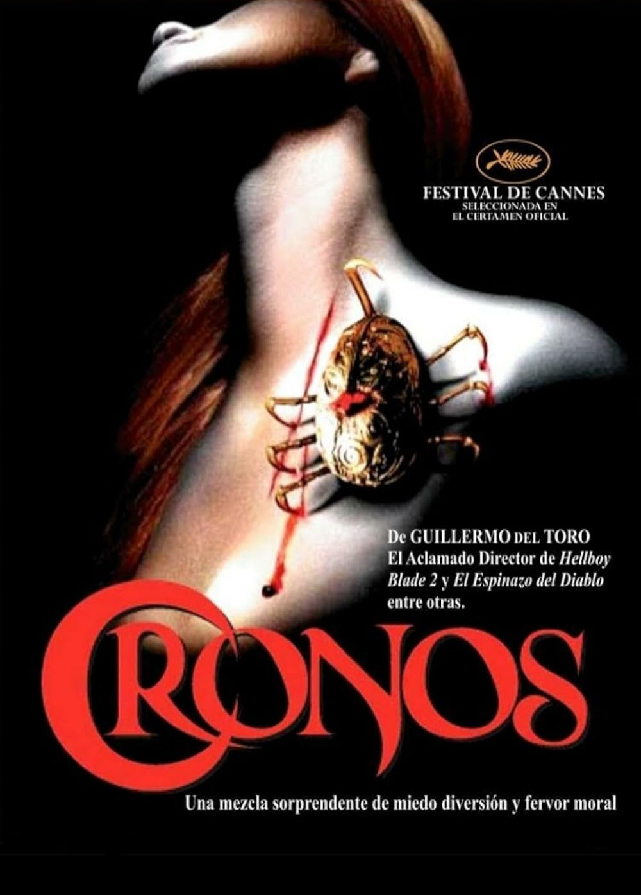
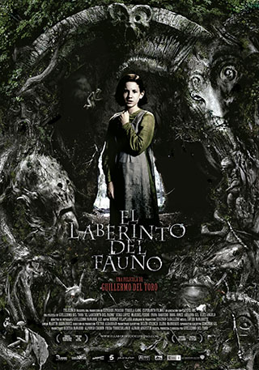
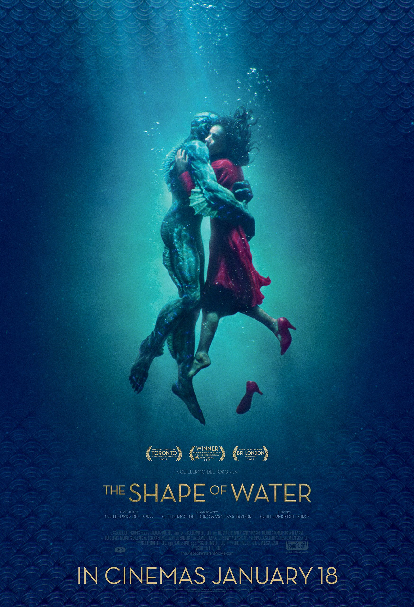
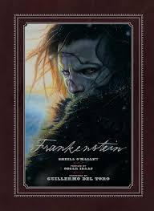

Guillermo del Toro
Guillermo del Toro es un director, guionista y productor mexicano, nacido el 9 de octubre de 1964 en Guadalajara. Desde sus inicios mostró interés por el cine oscuro y de horror. Comenzó su carrera trabajando en efectos especiales y maquillaje antes de convertirse en cineasta.
Visita este sitio: Conoce más de él y todas sus obras

Principales obras

Su primer largometraje como director y guionista fue "Cronos" publicada en 1993.

El laberinto del Fauno es una de sus obras más reconocidas y con esta película estuvo nominado por primera vez a dos categorías de los Oscar en el 2007.

La Forma del agua (The Shape of Water) es la obra que finalmente le otorga sus primeros Oscar en el 2018. Fue galardonado en dos categorías, Mejor Pelicula y Mejor Director.

Frankenstein es su obra más reciente (2025), con esta logró dos nominaciones, Mejor Pelicula y Mejor Guión adaptado, aunque él no ganó ninguna de estas categorías, la pelicula si fue 3 veces galardonada por maquillaje y peinado, vestuario y producción